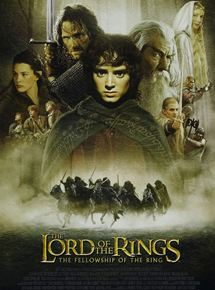
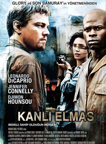
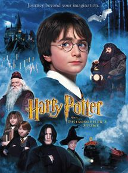

Vizyon tarihi: 7 Haziran 2019
Yönetmen: Simon Kinberg
Oyuncular: Sophie Turner, James McAvoy, Michael Fassbender
Tür: Macera, Aksiyon, Bilimkurgu
Ülke: ABD
Özet ve Detaylar
X-Men ekibinin karşısında şimdiye kadarki en zorlu ve güçlü düşmanları vardır; içlerinde biri olan Jean Grey.
Uzaydaki bir kurtarma görevi sırasında, Jean gizemli kozmik bir güç tarafından darbe alır. Neredeyse hayatını
kaybeden Jean eve döndüğünde bu gücün onu daha güçlü kıldığını fark eder. Ancak bu güç onu aynı zamanda daha
dengesiz bir hale de getirmiştir. İçindeki bu varlıkla mücadele eden Jean, güçlerini idrak edemediği ve
sınırlandıramadığı bir şekilde serbest bırakır. Kontrolden çıkan Jean sevdiklerine zarar vermeye başlar ve
X-Men’i bir arada tutan yapının çözülmesine sebep olur. Parçalanan ekip tekrar birlik olmanın yolunu
bulmalıdır. Mevhubahis yalnızca Jean’i kurtarmak değil, aynı zamanda Jean’in içindeki gücü silahlaştırmak ve
galaksiye hükmetmek isteyen uzaylılardan dünyayı kurtarmaktır.
Yüzüklerin Efendisi: Yüzük Kardeşliği

Vizyon tarihi: 21 Aralık 2001 (2s 58dk)
Yönetmen: Peter Jackson
Oyuncular: Elijah Wood, Sean Astin, Ian McKellen
Tür: Fantastik, Macera
Ülke: ABD, Yeni Zelanda
Özet ve Detaylar
Yüzüklerin Efendisi: Yüzük Kardeşliği, dünyanın kaderini değişterecek olan yüzükten kurtulmak için verilen
mücadeleyi konu ediyor. Yıllar önce üretilen ve Orta Dünya topraklarına kandan başka hiçbir şey getirmeyen
yüzüklerin sonuncusu, üretiminden yüz yıllar sonra ortaya çıkar. Amcasının kendisine emanet ettiği yüzüğün
nelere kadir olduğundan habersiz olan Frodo, büyücü Gandalf'ın anlattıkları sonrasında dehşete kapılır. Bu
yüzükten ve müstakbel savaşlardan kurtulmanın tek yolu, gücünü toplamaya çalışan Sauron'u da engellemek için
bu yüzüğü yok etmektir. Yüzüğü yok edilebileceği tek yer olan Mordor'a götürmek için kendini feda eden
savaşçılardan oluşan bir ekip oluşturulur. Çok uzun ve çetin geçecek olan yolculuk başlar. Orta Dünya'nın
kaderi, bu insanların ellerindedir.
Kanlı Elmas

Vizyon tarihi: 2 Şubat 2007 (2s 22dk)
Yönetmen: Edward Zwick
Oyuncular: Leonardo DiCaprio, Djimon Hounsou, Jennifer Connelly
Tür: Macera, Dram, Gerilim
Ülke: ABD, Almanya
Özet ve Detaylar
Hayat bazen, değerli bir tek şey uğrunda bambaşka insanların kaderlerini umulmadık bir biçimde
kesiştirebiliyor. Bambaşka hayatlardan gelen, vaktiyle orduda görev yapmış Danny Archer ile uzun zaman önce
ait olduğu yerden kopartılarak elmas madenlerinde işe koyulmuş Solomon Vandy. Herkesin gözdesi, büyüleyici bir
elmasın varlığı nedeni ile yolları kesişir. Her ikisi de elmasın peşi sıra gazeteci Maddy Bowen ile beraber
yola çıktıklarında hayatlarına dair değerli birer fırsatı da yakalamışlardır. Solomon ait olduğu yere,
ailesine kavuşabilme ihtimali ile Danny ise yeni bir hayata başlamanın umudu ile aydınlanırlar. Kuşatma ve Son
Samuray adlı filmlerin arkasındaki isim Edward Zwick’ten, heyecan dolu bir aksiyon-macera.
Harry Potter ve Felsefe Taşı

Vizyon tarihi: 1 Şubat 2002 (2s 32dk)
Yönetmen: Chris Columbus
Oyuncular: Daniel Radcliffe, Rupert Grint, Emma Watson
Tür: Fantastik, Macera, Aile
Ülke: ABD, İngiltere
Özet ve Detaylar
Çocuk filmi
Harry Potter'ın ailesi ağır ve şaibeli bir trafik kazasında ölmüştür. Öksüz ve yetim kalan Harry'nin
sığınabileceği tek yer, arasının pek de iyi olmadığı teyzesinin yanıdır. Harry, tüm hayatı boyunca idari
ailesi tarafından kötü davranışlarla büyütülür. Ancak Harry Potter artık 11 yaşındadır ve Harry'nin hayalleri
ve yetenekleri günden güne su yüzüne çıkmaktadır. Kısa süre sonra Hogwarts büyücülük okuluna davet edilir.
Artık tek amacı, ailesinin bu şüpheli kazasını araştırmak ve muhattaplarını cezalandırmaktır.